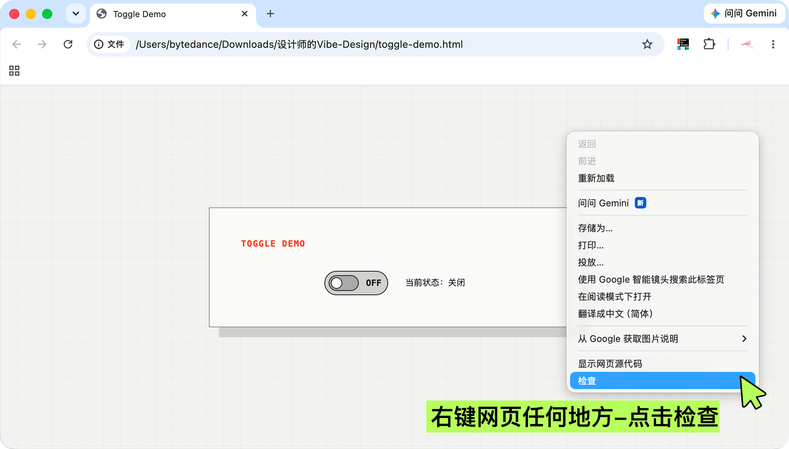
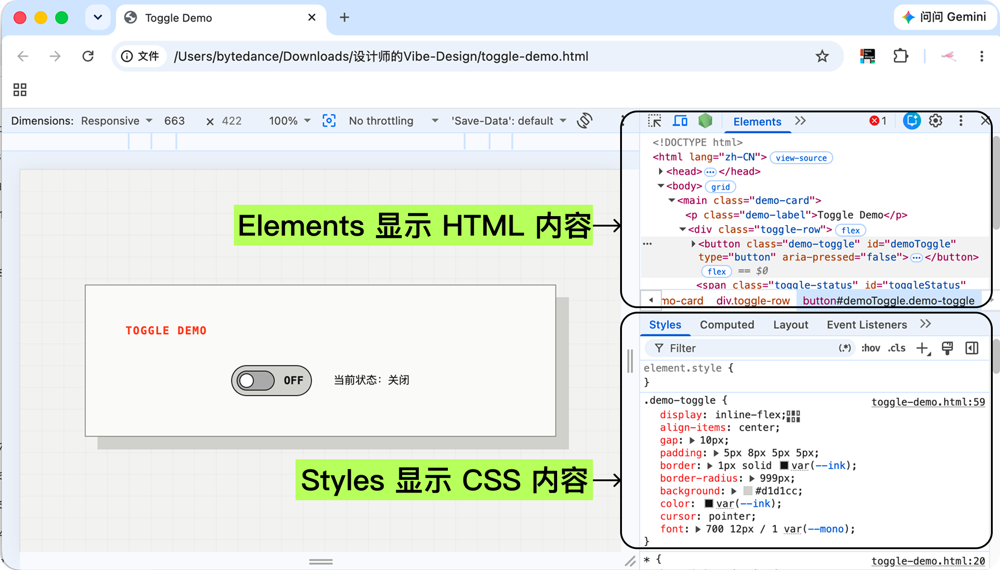
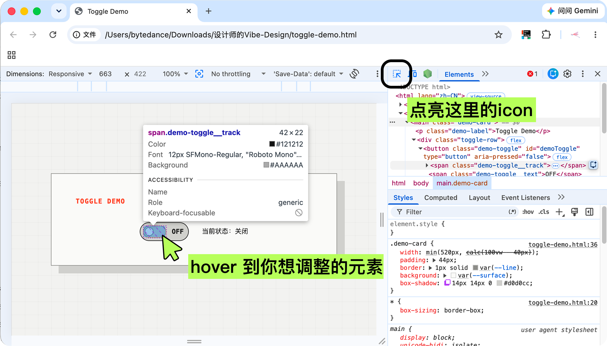
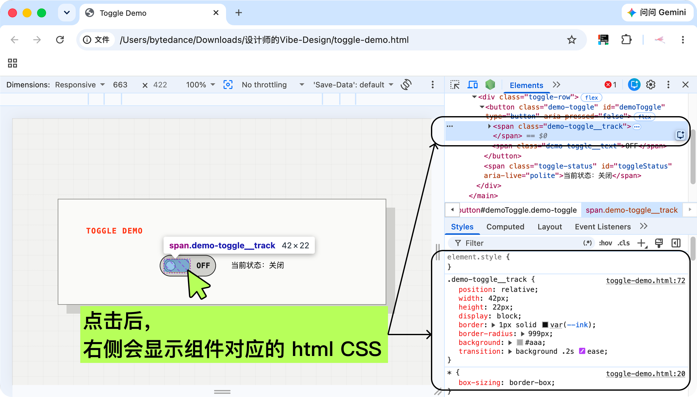
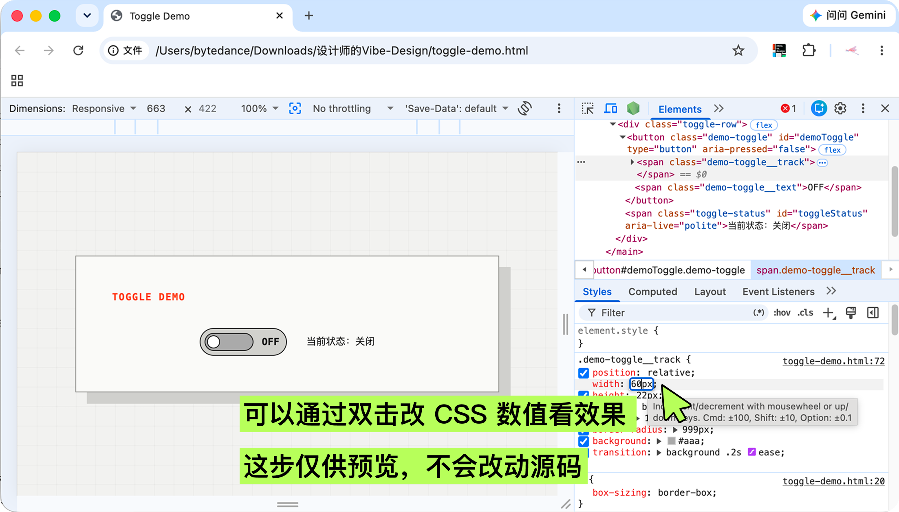
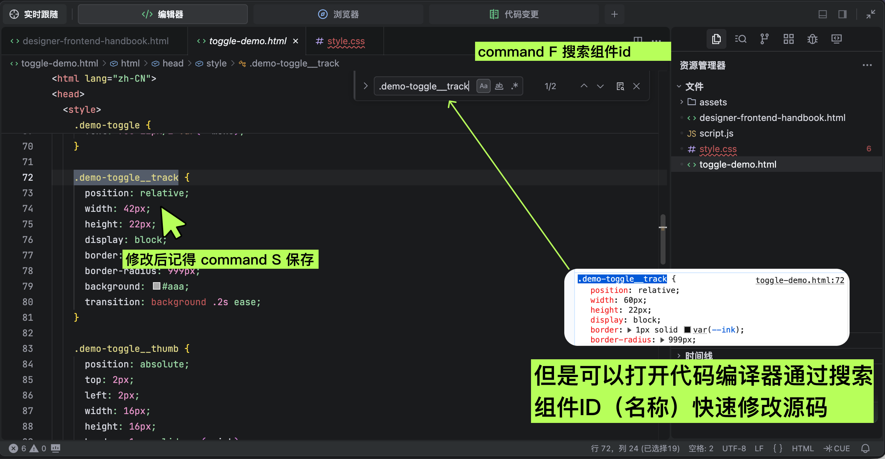

看懂并删改 AI 代码
从“只能看结果”变成“可以继续修改”
删改 AI 屎山代码、能分辨哪些代码是结构，哪些是样式，哪些是行为，知道怎么删掉冗余、保留主干。
DESIGN × CODE/ 2026
人人都可 Vibe Design
给设计师的页面代码入门：用 HTML / CSS / JavaScript / Assets，把设计想法快速变成可页面并精准微调。
AI 时代的设计师常常通过 vibe coding 的方式实现想法。但如果不知道怎么阅读生成内容，则 AI 输出的内容对我们来说将是一个 "黑盒"，我们无法理解也无法修改。
通过阅读本文，你将获得以下能力：
从“只能看结果”变成“可以继续修改”
删改 AI 屎山代码、能分辨哪些代码是结构，哪些是样式，哪些是行为，知道怎么删掉冗余、保留主干。
了解给不同的合作方应该传递什么样的代码结构
为什么产品和运营只要 HTML 而开发要 React、Node.js 等？
知道怎么下手改
与其通过和 codex、Trae 单轮对话，有些简单样式可以不要麻烦 Agent，节省时间和 Token。
做一个项目时，不要把文件乱放。把相关东西放进同一个文件夹里，页面才容易打开、修改、交接。
你把整个文件夹交给同事或 AI，对方就能同时看到页面、样式、行为和素材。路径关系不被破坏，页面通常就能正常工作
index.html，双击它就能用浏览器打开gift-panel.pngassets 是约定俗成的名字，也可以叫 images、media，CSS 和 JavaScript 也可以直接写在 HTML 里：但是为了我们更好的可视化并找到对应代码，建议将 CSS 和 JavaScript 写在单独的文件中。
先记它们在工作中的“职责边界”，在AI 出错时，你才能准确找到是哪出了问题。
HTML 负责把内容组织成清楚的层级与模块。（标题、按钮、头像、弹窗、输入框……）
就像 Figma 左侧的图层和分组。
颜色、字号、圆角、间距、排版、响应式和动画
就像 Figma 右侧的样式面板控制样式参数。
点击后出现反馈、倒计时变化、记住用户选择
就行 Figma 的原型连线、变量、条件和状态切换。
图片、图标、字体、音效、视频等，通常集中放在 assets 文件夹里，方便查找和替换。
就像 Figma 画板里拖入的图片
只有 HTML 时，浏览器能读懂结构，
但还没有 Toggle 的视觉样式。
<button id="demoToggle"> // 创建一个按钮，给它起个名字叫 demoToggle <span class="track"></span> // 开关的轨道背景 <span class="text">OFF</span> // 显示状态文字 </button> // 按钮结束
.demoToggle { // 通过名称判断这套样式应用于哪个组件 border-radius: 999px; // 把边角变成圆形 background: #b7ff5a; // 设置背景色为绿色 }
demoToggle.onclick = () => { // 当按钮被点击时 demoToggle.classList.toggle("is-on"); // 切换开关状态 toggleText.textContent = isOn ? "ON" : "OFF"; // 根据状态显示文字 };
页面不是一堆孤立的文件。HTML 通过标签组织内容，再通过相对路径找到 CSS、JavaScript 和 Assets，浏览器把它们组合成最终体验。
HTML 标签像一组有层级的容器；在文件头部，再用路径把 CSS 和 JavaScript 接入当前页面。
<link rel="stylesheet" href="style.css" /> <script src="script.js"></script>
同一个项目文件夹里，HTML 用相对路径找到同级的 CSS 和 JavaScript。
designer-demo/ ├── index.html ├── style.css ├── script.js └── assets/avatar.jpg
浏览器先读取 HTML，再根据路径加载 CSS 和 JavaScript。
用 Google Chrome 的 Inspect 找到问题出处，再回到 Trae 里修改对应文件，是最适合设计师入门的调试路径。

先在Chrome浏览器里打开当前 HTML 页面 （双击文件夹内的 html），确认你看到的是最新效果。在页面内任何地方点击右键，选择“检查”

检查（开发者工具）上半部分是 HTMl 内容，下半部分是 CSS。（如果没显示正确可以选择 Elements 和 Styles tab 查看。）

点击右上角的选择工具，hover 到页面元素后，可以观察你想调整的组件是在哪个html 元素标签内。

点击后，在检查面板里就可以看到当前选中的html标签以及其 id 和它的 style，并查看细节：颜色、间距、字号等。

可以通过双击 css 里某项的数值，通过该数字来实时预览效果。但这一步不会修改源代码，仅供预览。

通过复制组件名，并在 IDE 里搜索组件名，找到对应的组件，直接修改代码。保存代码，回到 Chrome 刷新页面，确认修改是否命中问题。
简单微调可以直接在 IDE 里修改，节省时间。复杂变动可以交给 Codex、Trae Work 等 coding agent；但先找到问题出处也很重要，它能帮助 agent 更有针对性地修改。
HTML、CSS 和 JavaScript 做的是可直接打开的页面代码，和开发级工程不同。
开发级代码通常需要“环境”（依赖、框架、构建工具等让代码跑起来的条件）和“部署环境”（把代码发布到服务器或平台的配置）。
但我们依然可以用 HTML / CSS / JavaScript，因为它们更轻、更易交接，能让产品、运营等没有代码经验和环境的人直接双击打开查看。
产品经理通过产品需求交接给我们一套可以交互的原型 HTML 代码；设计师基于这份代码，把视觉样式、布局细节和交互反馈还原出来，再把可演示页面交接给开发。
设计师和开发一起维护组件、规范和代码仓库；设计师通过沉淀 Skill，把组件使用方式、品牌规范和页面经验交给模型，从而提升 AI 调用组件和生成页面的准确性。
以下内容基本用不到，但是可以了解一下~
不是一种能直接打开的页面文件，而是一套更适合搭复杂页面的开发方式。
不是做页面的东西，而是让 JavaScript 能在浏览器外面运行的环境，很多前端开发工具都靠它。
是在 React 上再包一层的开发框架，帮你把页面组织、路由和上线方式都一起管起来。
是一种写 React 时常用的语法，长得像 HTML，但通常不能直接当网页文件打开。
前端项目里常用的“工具和依赖管理器”，可以理解成下载和管理开发零件的地方。
一套已经搭好基本规则和结构的开发方案，能让多人协作时更统一。
项目里借来用的现成工具或库，没有它们有些功能就跑不起来。
把很多零散代码和资源整理成更适合发布的一份或几份文件。
页面和后端互相要数据、传数据时约定好的连接方式。
JavaScript 的增强版，主要是帮开发时更早发现问题、让大项目更稳。
一种专门用来装结构化数据的文本格式，适合让系统和系统之间清楚地传信息。
项目开发里常用的版本管理工具，可以理解成 “代码的历史记录和协作系统”。